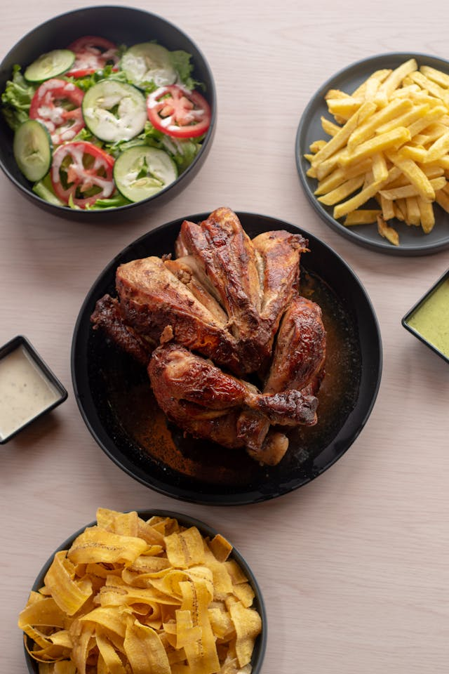

Home
Rotisserie Chicken

Description
Create nutritious and delicious Rotisserie Chicken meal whith the below ingredients
and instructions. This meal is low in fat and high in protein!
Ingredients
- store-bought rotisserie chicken
- sugar-free sweet and spicy sauce
- seasoning salt
- olive oil
- zucchini
Steps
- set a large non-stick pan to medium heat on a stovetop
- while the pan is heating, slice the zucchini into 1/4" slices
- apply a light layer of olive oil to the base of the pan
- add the sliced zucchini to the pan
- add seasoning salt to the zucchini, ensuring good coverage
- pick rotisserie chicken to separate the cuts of meat
- let zucchini brown before flipping
- pour zucchini onto plate with chicken and serve with sweet and spicy sauce
- enjoy!